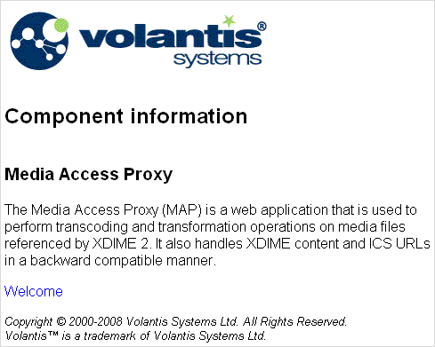

This page illustrates how to generate XDIME 2 from a Java Server Page, based on the same theme and layout as the welcome page.
MCS handles JSPs by identifying the .jsp file extension in a web.xml filter definition, just as it does with .xdime. The setting that follows is made by default.
<filter-mapping> <filter-name>MCSFilter</filter-name> <url-pattern>*.xdime</url-pattern> </filter-mapping> <filter-mapping> <filter-name>MCSFilter</filter-name> <url-pattern>*.jsp</url-pattern> </filter-mapping>
<?xml version="1.0" encoding="UTF-8"?>
<%@ page import="com.volantis.mcs.servlet.*" %>
<%
String result = null;
response.setContentType("x-application/vnd.xdime+xml");
String item = MarinerServletRequestContext.
findInstance(request).getParameter("item");
%>
<html xmlns="http://www.w3.org/2002/06/xhtml2"
xmlns:mcs="http://www.volantis.com/xmlns/2006/01/xdime/mcs">
<head>
<title>Component information</title>
<!-- Links to the layout and theme for this page -->
<link rel="mcs:layout" href="/welcome.mlyt"/>
<link rel="mcs:theme" href="/welcome.mthm"/>
</head>
<body>
<div class="logo">
<!-- the logo pane -->
<object src="images/vol_logo.mimg">
<span>Volantis Systems Ltd.</span>
</object>
</div>
<div class="copyright">
<p class="copyr">Copyright © 2000-2008 Volantis Systems Ltd.
All Rights Reserved.</p>
<p class="copyr">Volantis™ is a trademark of Volantis
Systems Ltd.</p>
</div>
</body>
</html>
<div class="background">
<% if (item.equals("mcs")) { %>
<h3>Multi-Channel Server</h3>
<p>Multi-Channel Server (MCS) helps you manage the
complexity of delivering a wide variety of content to PCs,
PDAs, mobile phones, interactive digital TV, internet
appliances, games consoles, VoiceXML and interactive kiosks.</p>
<p>To deliver to multiple channels, you need to present content,
services and applications in a consistent way across all
target devices. In MCS you can separate application design
from device delivery, and build a cost-effective and scalable
system, by defining policies.</p>
<%} else if (item.equals("map")) { %>
<h3>Media Access Proxy</h3>
<p>The Media Access Proxy (MAP) is a web application that is used to
perform transcoding and transformation operations on media files
referenced by XDIME 2. It also handles XDIME content and ICS URLs in a
backward compatible manner.</p>
<% } else { %>
<h3>Message Preparation Server</h3>
<p>Message Preparation Server (MPS) builds on the core functionality
of MCS to allow the optimization of message-based or WAP push content. It
provides the ability to write applications to generate and
transmit messages to subscribers’ devices. This allows
applications to be created that can support mass distribution
of messages to provide significant end user function. The
messages might, for example, contain information that users
had subscribed to.</p>
<% } %>
</div>
<p> <a href="simple_welcome.xdime">Welcome page</a> </p>

Congratulations! You have completed your first steps on the way to learning how to use Volantis Mobility Server. To follow up, we suggest you move on to Next steps with MCS. You will find it reinforces what you have learned here, with more detailed layout and theme arrangements and sample pages for a full web application - the Jive Sports site.
But there is more to follow here if you wish. There is a topic which shows how to set up a remote project using PHP and Ruby. Then, if you are familiar with XSLT, you can have a look at the topic Migrating to XDIME, which provides an example XSL stylesheet to transform the welcome page from XHTML to XDIME.